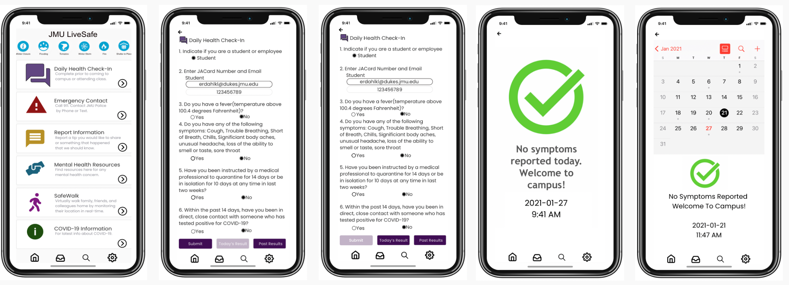

LiveSafe App Redesign: Daily Health Check-In
The Challenge and the Goal
James Madison University (JMU) undergraduate students began a daily health check-in on their phones in August 2020 due to COVID-19. Students are required to complete the survey each day they are on-campus and show their green check mark when entering buildings. The Daily Health Check-In survey is located in the LiveSafe app that students have on their phones. The LiveSafe app has other features including Emergency Contact Options, Report Information, COVID-19 Information and Guidance, Mental Health Resources, and SafeWalk.
I use the Daily Health Check-In everyday while at JMU, and over the past few months have noticed several features of the app that could be improved to better fit the user. By the end of Fall semester 2020, I was frustrated with the survey and noticed other users feeling the same way. Since the survey should be an important part of Stopping the Spread on-campus, I wanted to redesign the Daily Health Check-In feature of the LiveSafe app to help other users save time and make it more reliable.
Empathize and Discover
App Analysis
The LiveSafe app has a simple and easy-to-use layout, and the Daily Health Check-In feature is located at the top of the page. The survey includes six questions located on one scrolling page.
I created a site map of the Daily Health Check-In that users go through.
User Research
Design Question: How might we improve the experience of James Madison University undergraduate students trying to complete the Daily Health Check-in on their mobile phones?
My user research included thirty James Madison University students raging from 18 years old to 21 years old and included freshman, sophomores, juniors, and seniors across 17 majors. Users completed a google form answering questions about their usage of the LiveSafe app and the Daily Health Check-In feature.
63.3% of users use LiveSafe a majority of the week when considering all of the features of the app. 43.3% of users use the app daily, and 20% of users use LiveSafe 4-6 times a week. Furthermore, 100% of users said that the Daily Health Check-in feature is the most commonly used feature from the LiveSafe app. From this data, it can be assumed that the majority of users come to campus frequently or live on-campus because they are utilizing the Daily Health Check-In Application frequently throughout the week.
60% of users expressed that the Daily Health Check-In feature needs to be improved, followed by Report Information, Mental Health Resources, and SafeWalk.
When focusing on the Daily Health Check-In, there was a range of responses when users were asked about how they feel about the Daily Health Check-In. While some users feel this feature is above average or love to use it, 67% of users agree that the app could use some improvements.

While there is some variety in user feedback, the Daily Health Check-In application is frequently used by JMU students, and a majority of users agree that this specific feature could be improved. Based on user feedback and personal usage, three pain points can be identified.
Pain Points
Several pain points were identified after user research and from person use:
- Green Check Mark
Many users are frustrated that the green check mark is only sent to your email and does not remain on the app for the day. The app does not save your results, and several users retake the survey throughout the day due to this. Students do not like their results emailed because it often gets buried in their inbox. - Check-In Questions
A majority of users believe the questions are too easy and not reliable. Users feel people can lie on the questions and that students are not being held accountable. This includes temperature, symptoms, and if the user has been in quarantine or in contact with anyone who has tested positive for COVID-19. - Time
Some users felt that the survey takes too long and would like it to be easier and quicker. This includes the time it takes to complete the survey and receive the email.
Redesign
Information Architecture
To better understand the structure of the LiveSafe app, I created a wireframe of the current app layout.
I then updated the wireframe to better fit the needs of the users when they are completing the Daily Health Check-In survey. I added "Todays Results" and "Past Results" in the Daily Health Survey.
User Flows
I created two user flows focused on users completing the Daily Health Check-In for the first time in a day, and another user flow focused for users who have already completed the check-in for the day and need to show their green check mark.
Redesign Mockups
One of the main complaints about the Daily Health Check-in feature is that the green check mark required for building entrance at JMU is only sent to the user's email. To help solve this problem, I expanded the options on the survey page to include "Today's Result", "Past Results", and "Submit". The intention if that once users submit the survey for the day, they can click on "Today's Result" to open their green check mark. The submit button will also be disabled after a student completes the survey for the day to help decrease the amount of people taking it multiple times in the day. This should also save users time as they can choose to find their check mark in the app instead of their email if they want. The "Past Results" option helps users keep track of their results and when they showed any symptoms.
Another feature they will save users time is that the app will remember and automatically fill in if they are a student or employee and their email and/or JACard number. Many users wanted to type in their JACard card number instead of their email. With this redesign, the app will remember whatever you put it, and the user can select the email (as seen above) if they want to receive an email with the green check mark. If the user does not want an email, they can select their JACard number.
Users also expressed interest in making the questions harder and holding students accountable to their answers. I hope by making the process shorter students will take the questions more seriously.
Throughout this process, I realized how many features the LiveSafe app offers that I did not know about. User research also showed that a majority of students do not frequently use other features, and some students said they would like to see other features updated. To help this, I redesigned the home page so more features are visible and the layout is more familiar to students. The 5 major features of the app are located on the home page without having to scroll down and have a brief description. The multiple other features of the app are located at the top of the page where users can scroll horizontally through them. The main navigation located at the bottom of the page now includes the home page, inbox, a new search option, and settings.